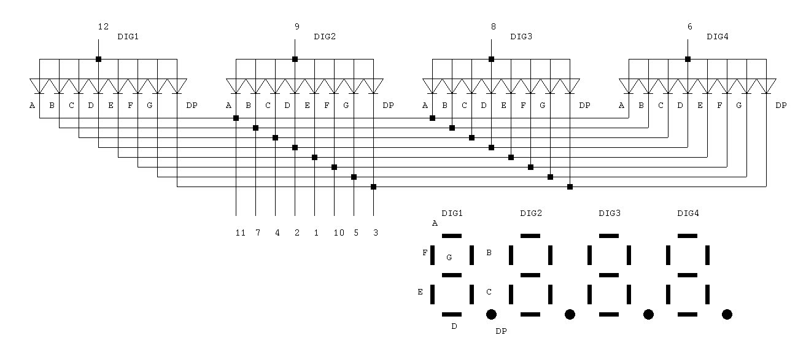

Forward current

IF = (V − VF − VOL) / R
V = 3.3 V, R = 180 Ω
IF = (3.3 V − [1.8 – 2.3 V] − [0 – 0.4 V]) / 180 Ω ≈ 3 – 8 mA
IDIG.max = IF.max × 8 = 64 mA
The OSL40562-IR is a 0.56 inch 4-digit 7-segment LED display. It has a common anode.



| pin number | Name | pin number | Name | |
|---|---|---|---|---|
| 1 | E | 12 | DIG1 | |
| 2 | D | 11 | A | |
| 3 | DP | 10 | F | |
| 4 | C | 9 | DIG2 | |
| 5 | G | 8 | DIG3 | |
| 6 | DIG4 | 7 | B |
IF = (V − VF − VOL) / R
V = 3.3 V, R = 180 Ω
IF = (3.3 V − [1.8 – 2.3 V] − [0 – 0.4 V]) / 180 Ω ≈ 3 – 8 mA
IDIG.max = IF.max × 8 = 64 mA